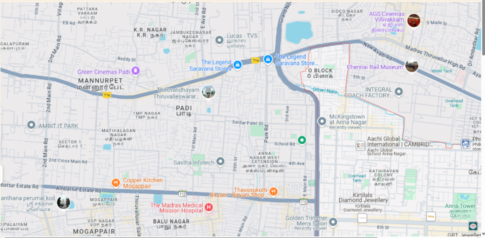

#map.html
<head>
    <title>My City</title>
</head>
<body>
    <h1 allign="center">
        <font color="red"><center><b>Anna Nagar</b></font></center>
    </h1>
    <h3 allign="center">
        <font color="blue"><center><b>Praveen Raj G (212224040245)</b></font></center>
    </h3>
    <center>
        
        <map name="MyCity">
            <area shape="rect" coords="970,720,1101,817" href="home.html" title="My Home Town">
            <area shape="rect" coords="698,856,938,993" href="movie.html" title="Rohini Theatre">
            <area shape="rect" coords="1062,632,1250,725" href="food.html" title="Kora Food Street">
            
    </center>
</body>
</html>

#home.html

```<html>
<head>
<title>My Home Town</title>
</head>
<body bgcolor="#fff3e0">
<h1 align="center">
<font color="#36454F"><b>shanthi Colony</b></font>
</h1>
<h3 align="center">
<font color="#FFD700"><b>My Home Town</b></font>
</h3>
<hr size="3" color="#ffccbc">
<p align="justify">
<font face="Georgia" size="5" color="#212121">
    A home is much more than just a physical structure; it's a space where people live, build memories, and feel a sense of belonging and comfort
    Physical Shelter: Protects inhabitants from environmental elements like weather and hazards.
    Emotional Comfort: Offers a personal space for relaxation and emotional well-being.
    Social Hub: Acts as a gathering space for family, friends, and social activities.
    Identity and Expression: Reflects personal and cultural values through decor, structure, and usage


</font>
</p>
</body>
</html>

#movie.html 

<head>
    <title>My Home Town</title>
    </head>
    <body bgcolor="#e8f5e9">
    <h1 align="center">
    <font color="#388e3c"><b>Rohini Cinemas</b></font>
    </h1>
    <h3 align="center">
    <font color="#fbc02d"><b>Chennai's Top Theatre for FDFS</b></font>
    </h3>
    <hr size="3" color="#a5d6a7">
    <p align="justify">
    <font face="Georgia" size="5" color="#1b5e20">
    
        Rohini Silver Screens, commonly referred to as Rohini Cinemas, is a highly celebrated multiplex located in Chennai, India. Established in 1991 as a single-screen theater, it has grown significantly over the years. In 1999, it became India’s first six-screen multiplex and was rebranded as Rohini Silver Screens in 2016. It is renowned for its state-of-the-art amenities, luxurious interiors, and a vibrant movie-watching atmosphere
    
    </font>
    </p>
    </body>
    </html>

#food.html 
<head>
    <title>My Home Town</title>
    </head>
    <body bgcolor="#f5f5f5">
    <h1 align="center">
    <font color="#2e3a87"><b>Kora Food Street</b></font>
    </h1>
    <h3 align="center">
    <font color="#ff6347"><b>Chennai's Top Food Street</b></font>
    </h3>
    <hr size="3" color="#dcdcdc">
    <p align="justify">
    <font face="Arial, sans-serif" size="4" color="#333333">
    
        Kora Food Street is a vibrant food destination in Chennai, Tamil Nadu, known for its unique concept and diverse culinary options. Located in Anna Nagar, it brings together a wide variety of street food and gourmet cuisines, all served from outlets crafted from repurposed shipping containers. The lively ambiance, colorful decor, and enticing aromas create an exciting dining experience
    
    </font>
    </p>
    </body>
    </html>


```


